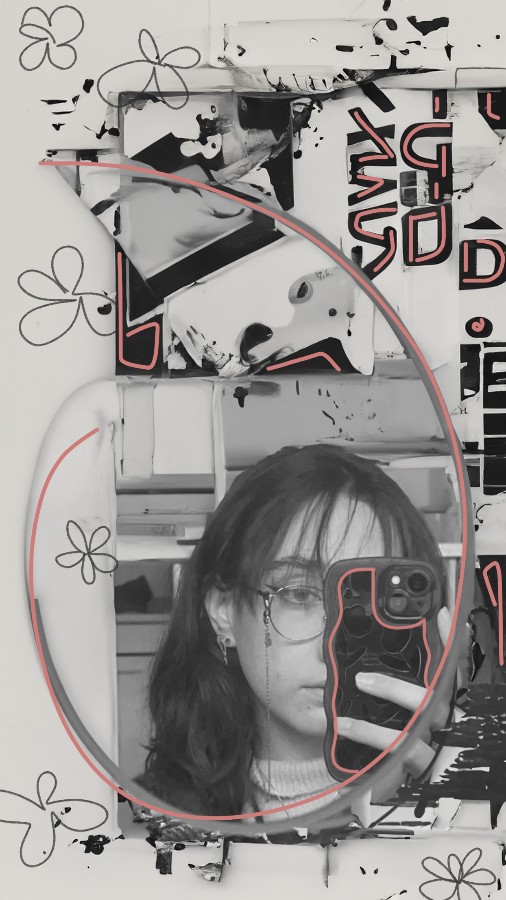

Fleur Leeuwis onthult veelbelovend portfolio in de wereld van creativiteit
Vandaag kondigt Fleur Leeuwis met opwinding de lancering aan van haar allereerste portfolio,
waarin ze een blik werpt op haar creatieve avonturen als student. Fleur, een enthousiaste creatieveling,
heeft de afgelopen maanden met plezier gewerkt aan het samenstellen van een verzameling van haar meest eigenzinnige projecten.
Dit portfolio biedt een kijkje in de diverse vaardigheden en interesses van Fleur, variërend van speelse grafische ontwerpen tot spontane typografie.
Haar werk weerspiegelt niet alleen haar creativiteit, maar ook haar ontdekkingstocht als student in de wereld van kunst en design.

Nieuwe projecten
Persoonlijke week
De trailer voor de film Pied Piper is onderweg naar het publiek! Met veel spanning heeft Fleur gewacht
op de feedback die zij zou gaan krijgen op haar werk. Tot nu toe lijkt het erop dat de film een groot
succes gaat worden!
Mercedes-Benz Trucks
In de afgelopen weken is Fleur samen met haar groep aan de slag gegaan aan het bouwen van een campagne
voor Mercedes-Benz Trucks. Ze moesten de koppen bij elkaar steken om iets te bedenken dat het imago
van het merk zou gaan verbeteren onder de vrachtwagenchauffeurs. Na veel werk te hebben geleverd is groep 2
eindelijk klaar met het project en staan ze te trappelen om hun werk delen met de wereld!